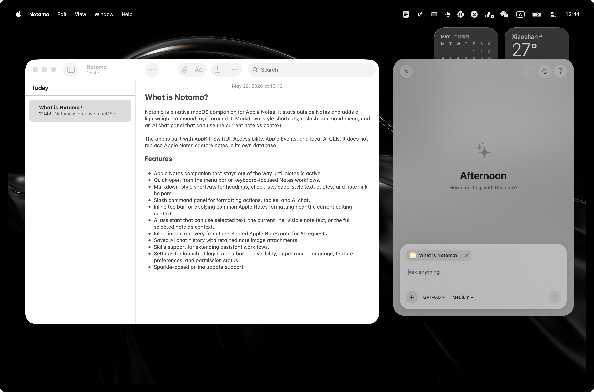
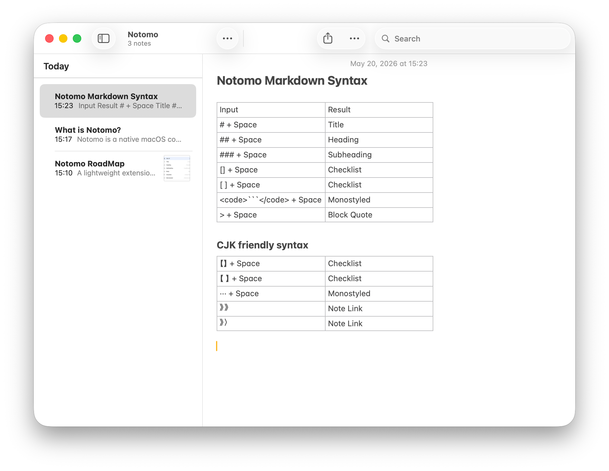
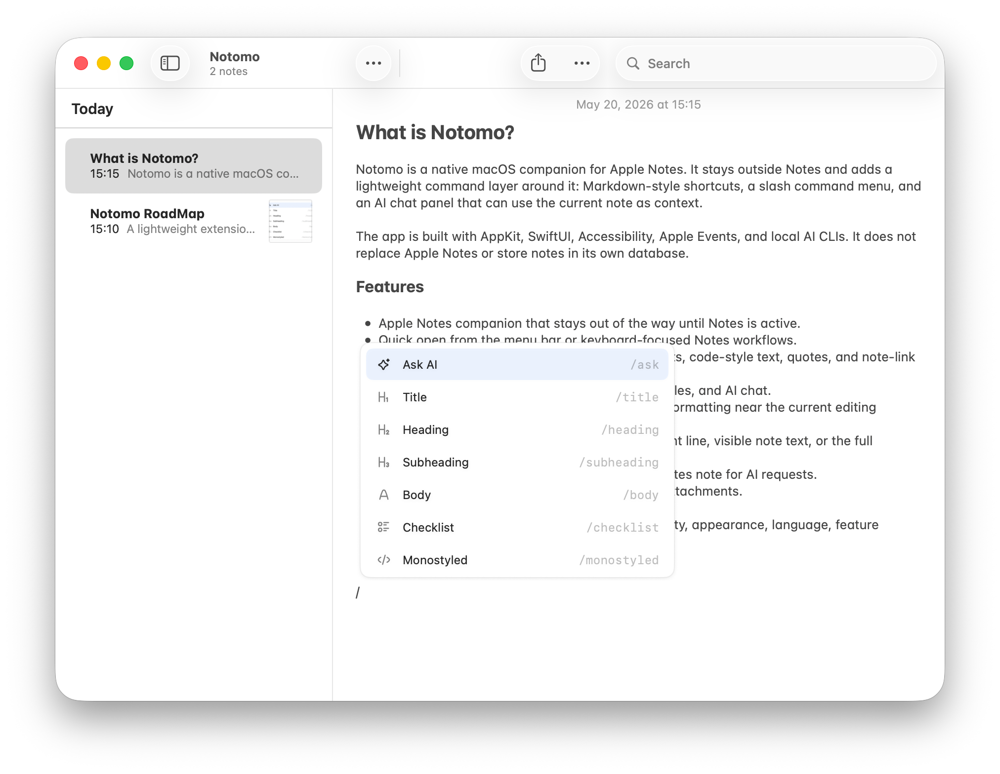
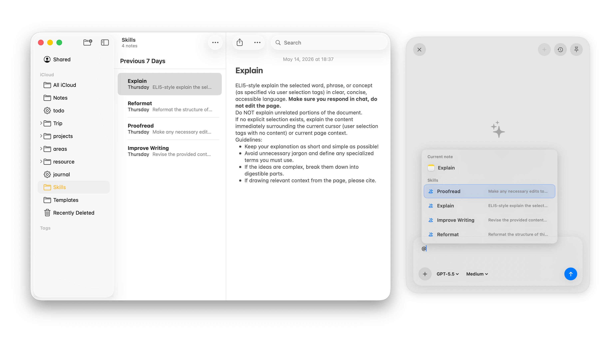

Works beside Apple Notes
Notomo appears when Notes is active and stays out of the way when it is not.
Use slash commands and note-aware AI beside the note you are already editing.
v0.3.0 · Requires macOS 15 or newer

Notomo appears when Notes is active and stays out of the way when it is not.
Use Markdown triggers for headings, checklists, code-style text, quotes, and note-link helpers.
Ask an assistant to use selected text, the current line, visible note text, or the full note as context.
Markdown shortcuts
Turn plain typing into Apple Notes formatting without leaving the keyboard.

Command layer
A slash menu and inline toolbar bring common actions near the note you are editing.

Note-aware AI
Use selected text, the current line, visible text, the full note, and recovered inline images when they are available.

Notomo observes and assists from the outside. It does not replace Apple Notes or store notes in its own database.